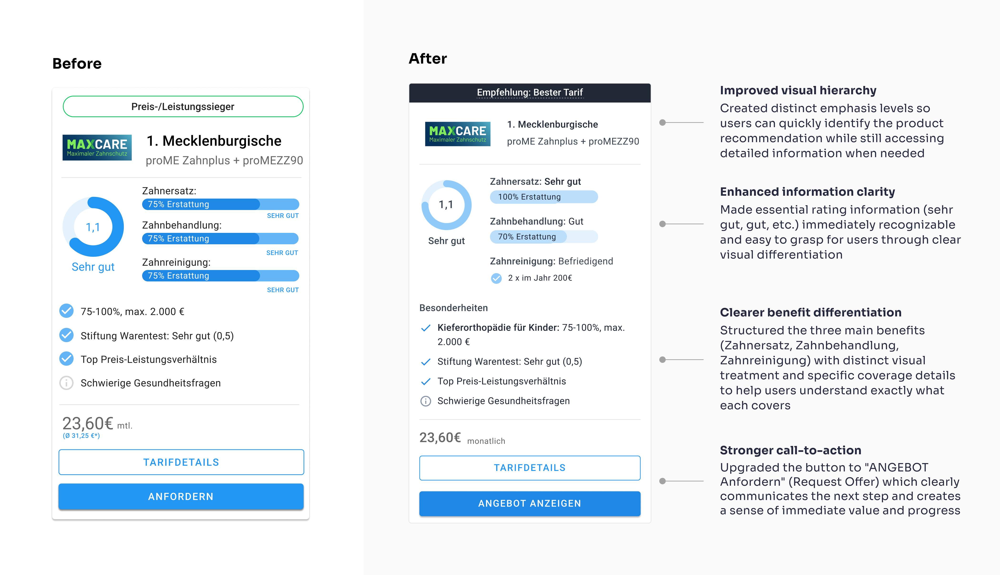
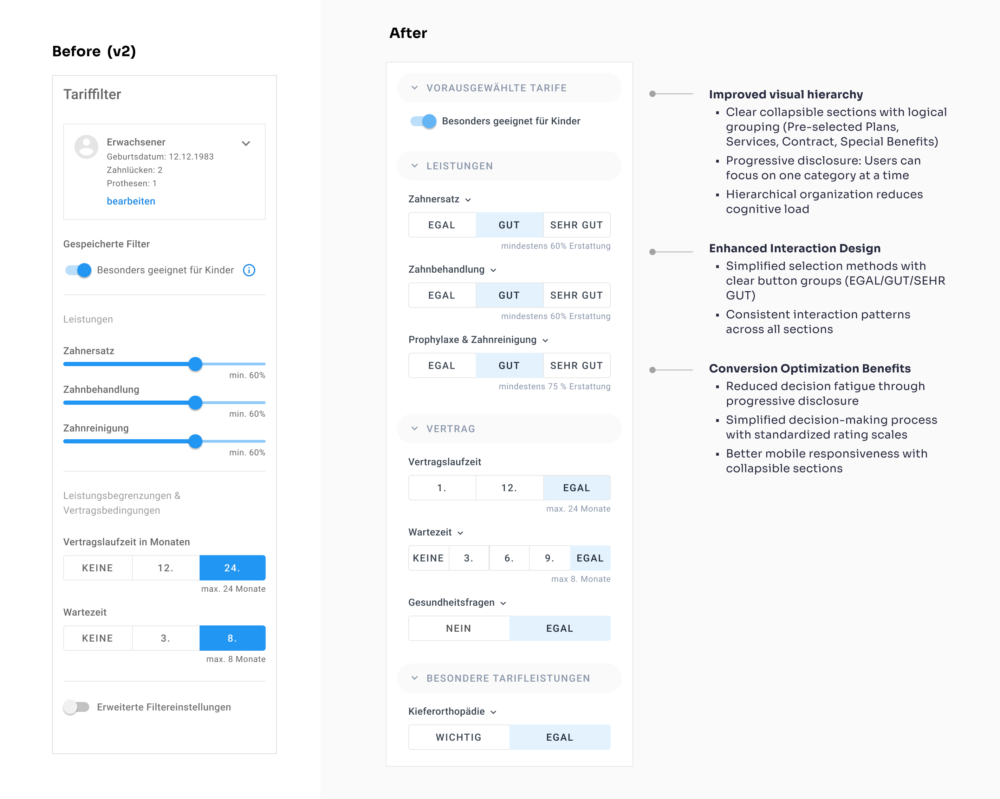
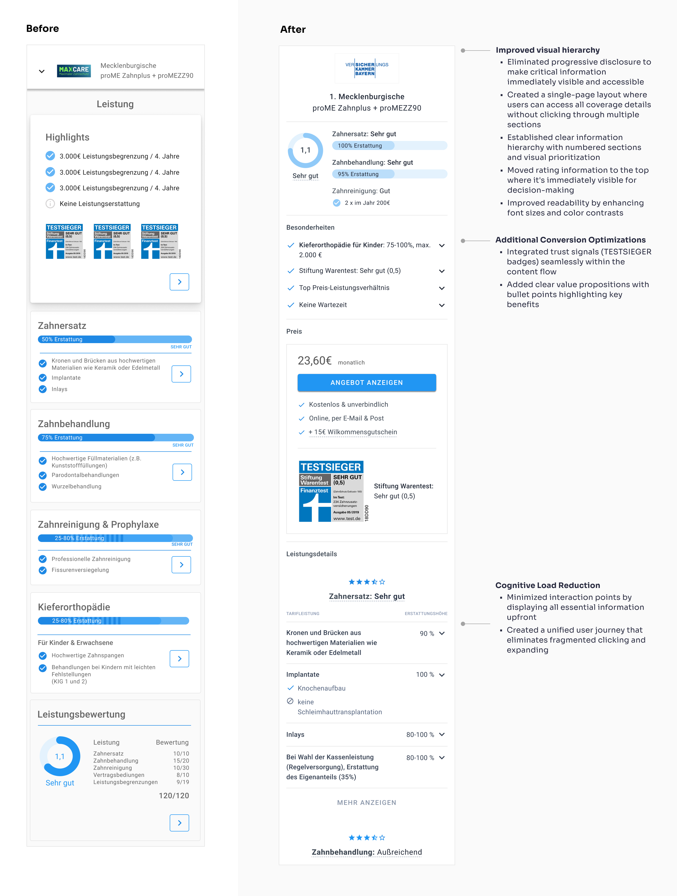
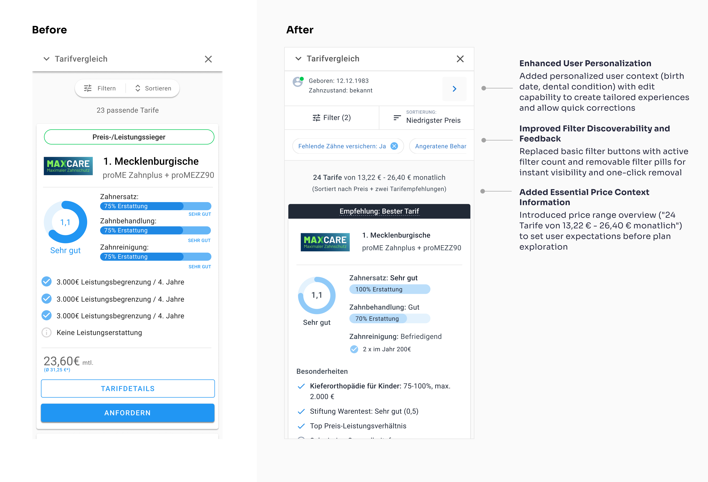
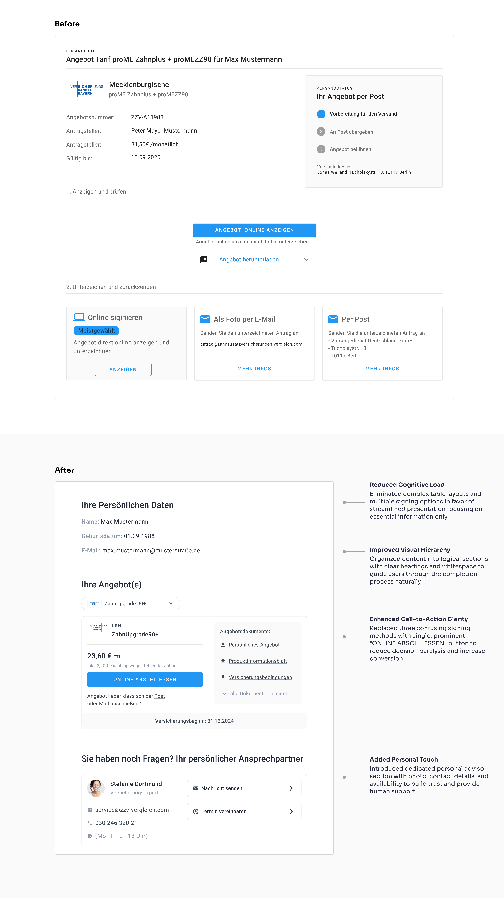

The Dental Insurance Portal That Was Slowly Dying
(and how we brought it back to life)
Who was involved?
- Me (Wolfgang) as UX Designer
- Founder of the company
- Two developers (Backend + Frontend)
Timeline
- 2021 - ongoing
- Development is still in progress
The Problems
- Search rankings went from top 3 to page 3 (where websites go to die)
- Users were abandoning the site fast without converting
- The owner started to redesign the portal by himself, without any foundation in UX or UI
- About 70 % decrease in monthly revenue
What I actually did
100+ Sessions
Ran over 100 sessions (1:1) with the owner and worked together on the research, design and content
Usability Testing
Ran unmoderated usability tests and watched people struggle through the site
Analytics Analysis
Analyzed analytics data and found out what SEO content was important and what not
A/B Testing
A/B Tested and improved designs based on the results
Content Rewriting
Rewrote pages and pages of content about tooth health and improved the UX copy
Design System
Expanded and changed the initial material design system the founder worked with
UX/UI Fixes
Fixed the UX and UI with the resources that were in scope
Collaboration
Worked closely with developers and the founder (1:1 sessions) to ensure seamless and goal focused implementation
Performance Tracking
Monitored key metrics and continuously optimized based on real user data
Important Note
The original design (before) was created by the founder, who had no background in UX or UI design. The goal was to improve usability and conversion rates while maintaining the existing brand identity and most of the available material design templates.
A small selection of dozens of improved UI elements
Insurance rate card
Users struggled to understand and compare insurance options due to unclear information hierarchy and poor readability, making it difficult to choose the right plan.
Filter
Users didn't really understand the implication of the percentage Numbers for the services and couldn't find important filters that where hidden behind the "enhanced filter"-Button
Insurance Plan Details
Users abandoned insurance detail pages due to poor information architecture. Critical details were hidden behind multiple layers of progressive disclosure, making it difficult for non-experts to find and compare essential coverage information.
Mobile List View
This critical comparison interface had poor mobile filter usability. Users couldn't easily apply or remove filters, hindering their ability to find relevant insurance plans.
Insurance offer
Simplified offer page that reduces friction and guides users smoothly from interest to application completion.
The Process
Set Goals
SEO uplift, conversion targets, brand differentiation
Wireframing & Prototyping
Iterated quickliy on clickable Prototypes and Designs in 1:1 Sessions in Figma
UI System & Framework
Adopted Google Material Design as the visual foundation. Extended and customized the Material library to accommodate unique filtering, comparison, and checkout components.
User Testing & Validation
Ran unmoderated usability sessions to uncover pain points in navigation, filtering and checkout. Analyzed session recordings to fine-tune component placements.
Implementation & Collaboration
Worked hand-in-hand in 1:1 sessions on several days a week to ensure alignment. Paired with the CEO to rewrite Content and implement SEO optimizations.
Continuous Optimization
Launched A/B tests on landing pages through Google Ads to measure impact on drop-off rates. Iteratively adjusted copy, CTAs, and form layouts based on quantitative results.
The Results:
Conversion Recovery
2025 still rising
Search Rankings
Top 3 results for key terms
Key Takeaways
- German users behave differently: Current marketing trends from the US don't necessarily work for German audiences.
- Brand vs. usability balance: Maintaining the existing brand identity while improving usability and conversion rates required careful consideration.
- Usability heuristics work: Following standard UX heuristics solved most of the interface problems.
- Cross-functional collaboration matters: Working directly with the founder and developers ensured both usability and discoverability.
- Data-driven iterations are essential: User testing and A/B experiments were crucial to optimize both experience and revenue.
- Direct founder access was key: Working closely with the CEO was crucial to understand the business goals and user needs.
- Dental insurance is complex: The subject matter added significant complexity to the design process 😅